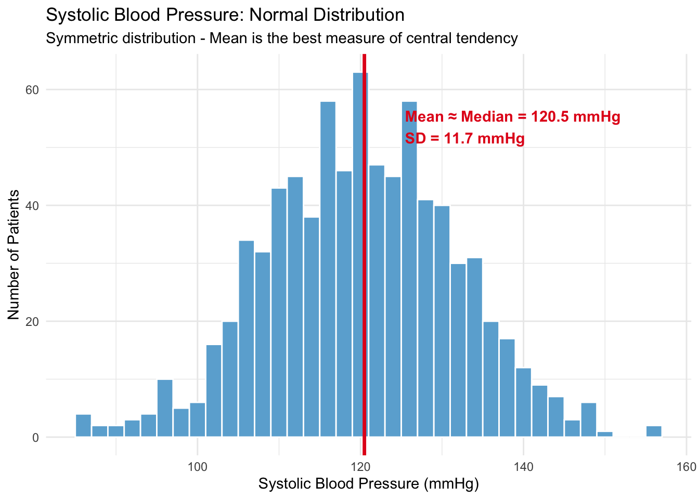
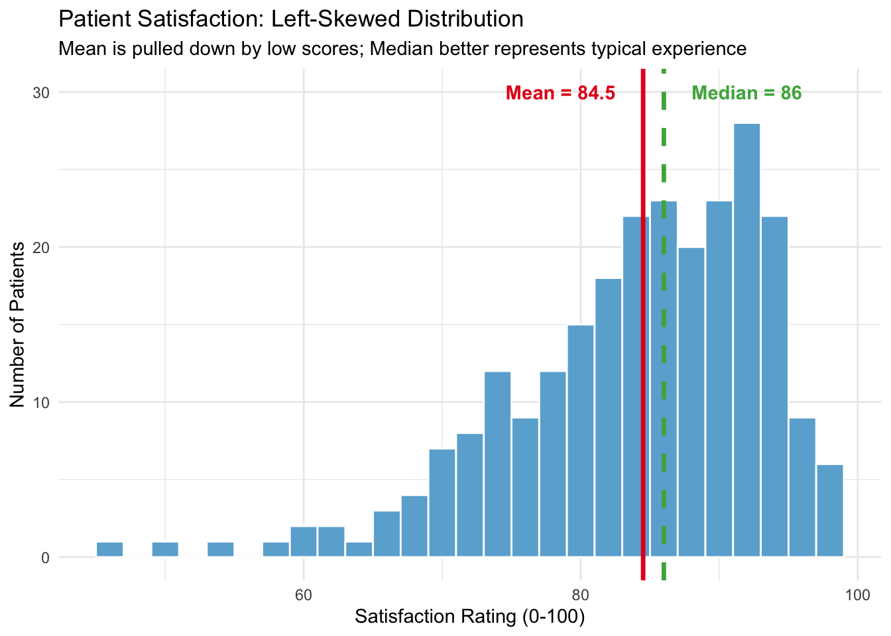
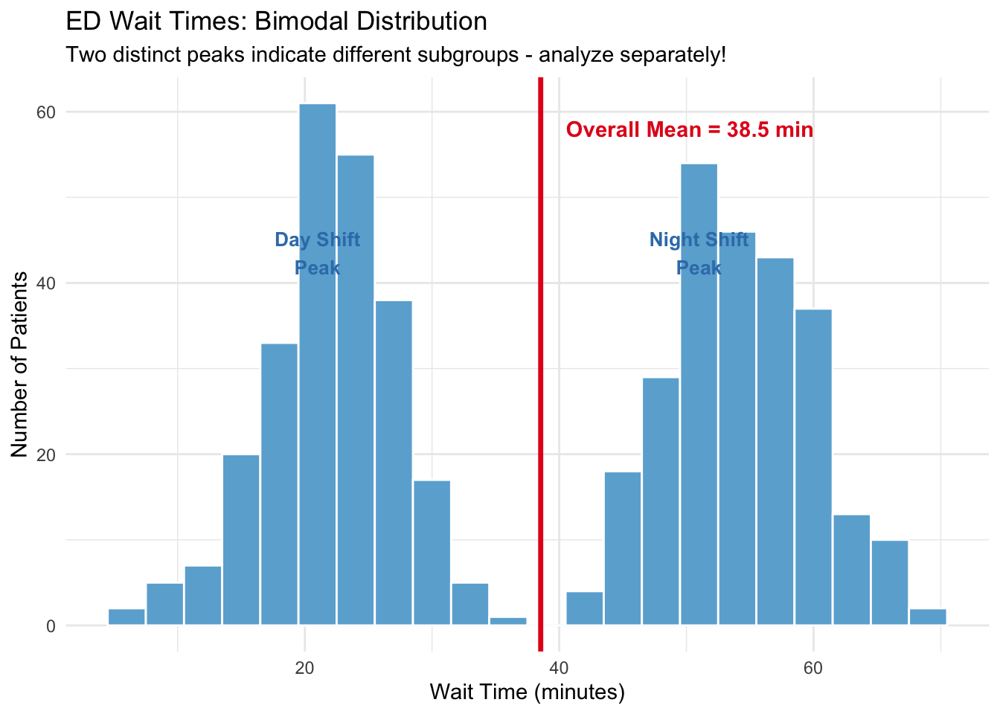

Basic Statistical Concepts (Lecture Notes)
Week 03
1 Introduction
1.1 Why Statistical Concepts Matter in Healthcare Management
Imagine you are presenting to your hospital’s board: “Our average patient satisfaction score is 5.2 out of 7.” A board member asks, “Is that good? How does it compare to last quarter? Are all departments performing similarly?”
Without understanding central tendency, dispersion, and how to interpret differences, you might misrepresent your data, or worse, make decisions based on misleading numbers. This lecture gives you the tools to answer these questions confidently.
As a healthcare manager, you make decisions daily that affect:
- Patient outcomes: Quality of care, safety, satisfaction
- Operational efficiency: Staffing, resource allocation, workflow
- Financial performance: Cost management, budget planning
- Strategic planning: Service line development, capacity planning
Understanding basic statistical concepts helps you:
- Describe your data accurately (What’s typical? How much variation exists?)
- Compare groups meaningfully (Are these differences real or random?)
- Make evidence-based decisions (What does the data actually say?)
- Communicate findings clearly to diverse stakeholders
2 Learning Objectives
By the end of this session, you will be able to:
- Understand commonly used measures of central tendency (mean, median, mode) and dispersion (range, variance, standard deviation)
- Identify the four scales of measurement (also known as data types) and select appropriate statistics for each
- Recognize how data distribution shapes affect the choice of central tendency measures
- Understand the basic logic of hypothesis testing and how to account for uncertainty in the data
3 Central Tendency and Dispersion Measures
When working with healthcare data, we face a common challenge: how do we make sense of hundreds or thousands of data points?
Imagine you are describing patient satisfaction by reading each score individually, like “Patient 1 scored 2, Patient 2 scored 4, Patient 3 scored 6…” With 200 patients, this provides too much detail to identify meaningful patterns.
A good solution is summarizing data using two key types of measures:
- A representative value that indicates where the “center” of the data lies (Central tendency)
- Measures that describe how spread out the data is around that center (dispersion)
Together, these summaries help us understand the overall pattern efficiently and communicate findings clearly.
In this section, we’ll learn the most commonly used central tendency and dispersion measures, what they tell us, and how to calculate them.
3.1 Central Tendency: The “Typical” Value
Central tendency is a statistical summary that identifies a single value as representative of an entire distribution. It aims to describe the “center” of a dataset, providing a typical value useful for summarizing large amounts of data.
Central tendency measures answer questions like:
- What is the typical length of stay for hip replacement patients?
- What satisfaction score do most patients give?
- What is the average wait time in the ED?
3.1.1 The Three Measures

3.1.1.1 Mean (Arithmetic Average)
\[\bar{x} = \frac{\sum_{i=1}^{n} x_i}{n} = \frac{x_1 + x_2 + ... + x_n}{n}\]
- The balancing point of the data
- Sum all values and divide by the number of observations
- Sensitive to outliers (extreme values)
- Most common measure used in general
3.1.1.2 Median
- The middle value when data is arranged in order
- If \(n\) is even, it’s the average of the two middle values (e.g., for 2, 4, 6, 8, the median is 5)
- Less affected by outliers
- Better representation when data is skewed
3.1.1.3 Mode
- The most frequent value in the dataset
- Can have multiple modes (bimodal, multimodal)
- Useful for categorical data and finding the most common value
3.1.2 Example: Length of Stay for Patients
Imagine a small post-surgical recovery unit wherein eleven patients were discharged last week. While most recovered typically, one experienced complications. Their lengths of stay (LOS) in days were:
Patient LOS data: 2, 2, 2, 3, 3, 4, 5, 5, 6, 8, 15 days
Let’s understand how we can describe the central tendency of the data.
Calculations:
- Mean: (2 + 2 + 2 + 3 + 3 + 4 + 5 + 5 + 6 + 8 + 15) / 11 = 55 / 11 = 5 days
- Median: Arrange in order and find middle value (6th value) = 4 days
- Mode: Most frequent value = 2 days (appears 3 times)
This indicates that there is no single “best” measure of central tendency. The “right” choice depends on your specific question and the shape of your data. Checking and comparing all three measures helps you get the full story.
3.1.3 How to Calculate in R
Now let’s take a look at how to calculate these measures in R.
mean(): Returns the mean of a data vectormedian(): Returns the median of a data vectorMode(): Returns the mode of a data vector (To use theMode()function, we first need to loadDescToolspackage)
# 1. Create the data vector
los_data <- c(2, 2, 2, 3, 3, 4, 5, 5, 6, 8, 15)
# 2. Calculate Mean
los_mean <- mean(los_data)
los_mean[1] 5# 3. Calculate Median
los_median <- median(los_data)
los_median[1] 4# 4. Calculate Mode (we first need to load `DescTools` package))
library(DescTools)
los_mode <- Mode(los_data)
los_mode[1] 2
attr(,"freq")
[1] 33.2 Dispersion: How Spread Out is the Data?
Now that we understand central tendency (where the center is), let’s learn about dispersion.
Dispersion refers to how spread out the data is around that center (i.e., the extent to which a distribution is stretched or squeezed). It tells us how much the values in our dataset differ from the mean and from each other.
Dispersion measures answer questions like:
- How consistent are our wait times? (Predictable vs. unpredictable)
- How much do patient outcomes vary across providers (hospitals)?
- Is there high variability that needs investigation?
**Why Dispersion Matters?
Knowing the center isn’t enough. We also need to know how much variability exists around that center. Variability often equates to risk or uncertainty in healthcare.
Imagine you are an ambulance medic deciding where to take a critical patient. Two hospitals both have an average wait time of 45 minutes, but their consistency differs wildly:
- Hospital A: Wait times are consistently between 40 and 50 minutes.
- You know the patient will wait about 45 minutes. It is predictable. You can plan for it.
- Hospital B: Wait times fluctuate wildly between 10 minutes and 120 minutes.
- You might get lucky (10 mins), or you might get stuck for 2 hours (120 mins). It is unpredictable and risky.
Although their “centers” (means) are identical, Hospital A offers a “better” (safer, more reliable) process because it has lower dispersion. High dispersion is the enemy of quality control!
3.2.1 Measures of Dispersion
So how do we quantify this “spread” or “risk”? Just as we have specific tools for central tendency, we have statistical measures to describe dispersion.
Let’s explore the most commonly used measures: Frequencies or Proportions, Range, Variance, and Standard Deviation.
3.2.1.1 Frequency and Proportions
One way we can describe the dispersion of data is by checking how observations are distributed across possible categories. This is especially useful when we can’t calculate a numerical average (like with “Insurance Type”).
- Frequencies: The count of observations in each category.
- Shares/Percentages: The proportion of observations in each category.
Example:
- Low Dispersion: 95% of patients have “Private Insurance” (Concentrated).
- High Dispersion: 25% Private, 25% Medicare, 25% Medicaid, 25% Uninsured (Spread out).
3.2.1.2 Range
\[\text{Range} = \text{Maximum} - \text{Minimum}\]
- It indicates the difference between the largest and smallest values in a dataset
- Simplest measure of dispersion
- Very sensitive to outliers
- Useful for quick assessment
3.2.1.3 Variance
\[s^2 = \frac{\sum_{i=1}^{n} (x_i - \bar{x})^2}{n-1}\]
- Average of squared deviations from the mean
- Units are squared (e.g., days²), so it is hard to interpret directly
- Foundation for many statistical tests
3.2.1.4 Standard Deviation (SD)
\[s = \sqrt{s^2} = \sqrt{\frac{\sum_{i=1}^{n} (x_i - \bar{x})^2}{n-1}}\]
- Square root of variance
- Same units as original data (e.g., days, not days²)
- Most commonly reported measure
3.2.2 Calculating Dispersion: Step-by-Step Example
Let’s use the same length of stay data from our central tendency example:
Patient LOS data: 2, 2, 2, 3, 3, 4, 5, 5, 6, 8, 15 days
| Patient | LOS (days) | Deviation from Mean (5 days) | Squared Deviation |
|---|---|---|---|
| 1 | 2 | -3 | 9.0 |
| 2 | 2 | -3 | 9.0 |
| 3 | 2 | -3 | 9.0 |
| 4 | 3 | -2 | 4.0 |
| 5 | 3 | -2 | 4.0 |
| 6 | 4 | -1 | 1.0 |
| 7 | 5 | 0 | 0.0 |
| 8 | 5 | 0 | 0.0 |
| 9 | 6 | 1 | 1.0 |
| 10 | 8 | 3 | 9.0 |
| 11 | 15 | 10 | 100.0 |
| Sum | 55 | 0 | 146.0 |
| Average (or Variance) | 5 | 0 | 14.6 |
Calculation Steps:
- Calculate mean: 55 / 11 = 5 days
- Calculate deviations: Each value minus the mean (see table above; the third column)
- Square the deviations: Eliminates negative values, emphasizes larger deviations (the fourth column)
- Sum and average (Variance): Sum of squared deviations / (n-1) = 14.6 days²
- Take square root (SD): \(\sqrt{\text{Variance}}\) = 3.82 days
3.2.3 How to Calculate in R
Let’s take a look at how to calculate these measures in R. By using the following functions, we can calculate dispersion measures.
table(): Calculates frequencies (counts) for categorical dataprop.table(): Calculates proportions (shares) from a table (i.e., combiningprop.table()andtable())range(): Returns the minimum and maximumvar(): Calculates the Variance (automatically uses n-1)sd(): Calculates the Standard Deviation (automatically uses n-1)
# 1. Calculate Frequencies and Proportions
# Frequencies (Counts)
table(los_example)los_example
2 3 4 5 6 8 15
3 2 1 2 1 1 1 # Proportions (Shares)
prop.table(table(los_example))los_example
2 3 4 5 6 8 15
0.27272727 0.18181818 0.09090909 0.18181818 0.09090909 0.09090909 0.09090909 # 2. Calculate Range
los_range <- range(los_example)
los_range [1] 2 15# To get the single number (max - min):
diff(los_range)[1] 13# 3. Calculate Variance
los_var <- var(los_example)
los_var[1] 14.6# 4. Calculate Standard Deviation
los_sd <- sd(los_example)
los_sd [1] 3.8209954 Scales of Measurement
Now that you understand tools to describe data (central tendency and dispersion measures), let’s talk about when each tool is appropriate to use.
Not all statistics work with all types of data. Using the wrong statistic for your data type can lead to meaningless or misleading results.
4.1 What are Measurement Scales
In healthcare management, we may collect many types of data: patient demographics, satisfaction scores, diagnosis codes, length of stay, costs, and more.
The same concept can be measured in different ways. For example, to measure patient satisfaction, we could:
- Ask patients to rate satisfaction on a 7-point scale (1 = very dissatisfied, 7 = very satisfied)
- Ask patients to select one of three categories (low, medium, high)
- Ask a simple yes/no question (satisfied or not satisfied)
These are all measuring “patient satisfaction,” but each approach creates a different type of data that requires different statistical methods.
Measurement scales (also called levels of measurement or data types) are classification systems that describe the nature of information contained in data values and the mathematical properties they possess.
4.2 The Four Scales
There are four different types of measurement scales (nominal, ordinal, interval, and ratio). Let’s examine each.

4.3 Nominal Scale
A nominal scale uses numbers or labels to classify data into distinct categories or groups that have no inherent order or ranking.
Examples
- Diagnosis codes: ICD-10 codes (e.g., I5031 for Acute Heart Failure)
- Insurance type: Private, Medicare, Medicaid, Uninsured
- Hospital department: Emergency, Surgery, Internal Medicine, etc.
- Blood type: A, B, AB, O
- Gender: Male, Female, Other
Appropriate Statistics for Nominal Data
Among the central tendency and dispersion measures you learned earlier, which are appropriate for nominal scale data?
- Central tendency: Mode (most frequent response category)
- Dispersion: Frequency distribution, percentages across response categories
You CANNOT calculate a meaningful mean or median for nominal data. Even if categories are coded as numbers (1, 2, 3, 4), the average is meaningless!
For example, if we code Private=1, Medicare=2, Medicaid=3, Uninsured=4, an “average” of 2.3 is meaningless. It doesn’t represent any real insurance category and non-interpretable!
| Insurance Type | Count | Percentage |
|---|---|---|
| Medicaid | 119 | 11.9 |
| Medicare | 334 | 33.4 |
| Private | 443 | 44.3 |
| Uninsured | 104 | 10.4 |
4.4 Ordinal Scale
An ordinal scale uses numbers or categories to classify data into groups that have a relative order or rank, but the intervals between values are not necessarily equal.
We know that Category A > Category B > Category C, but we DON’T know if the difference between A and B equals the difference between B and C.
Examples
- Pain scale categories: None, Mild, Moderate, Severe
- Age groups: 18-44, 45-64, 65-74, 75+
- NYHA Heart Failure Class: Classifies heart failure severity based on physical activity limitations.
- I (No limitation) → II (Slight) → III (Marked) → IV (Unable to carry on any physical activity)
- Triage categories: Determines treatment priority in emergency departments.
- Immediate (Life-threatening) → Emergent → Urgent → Non-Urgent
- Cancer staging: Stage I → Stage II → Stage III → Stage IV
- Functional status: Independent, Needs minimal assistance, Needs moderate assistance, Fully dependent
Appropriate Statistics for Ordinal Data
Among the central tendency and dispersion measures you learned earlier, which are appropriate for ordinal scale data?
- Central tendency: Mode (most common category), Median (middle rank)
- Dispersion: Frequency distribution, Percentages, Range.
- Note on Range: For ordinal data, range is reported as the minimum to maximum categories (e.g., “Outcomes ranged from ‘Mild’ to ‘Severe’”). It shows the full spread of responses.

Why You Cannot Average Ordinal Data
A mean for ordinal data is not meaningful. Even if categories are coded as numbers (1, 2, 3, 4), arithmetic operations are meaningless because intervals are not equal!
This is a critical point that’s often misunderstood. Let’s see why averaging ordinal data produces meaningless results.
Example: Suppose we ask 100 patients to rate their post-operative pain using these categories:
- None (coded as 1) — 20 patients
- Mild (coded as 2) — 25 patients
- Moderate (coded as 3) — 40 patients
- Severe (coded as 4) — 15 patients
If we calculate the mean: (20×1 + 25×2 + 40×3 + 15×4) / 100 = 2.50
What does 2.50 mean? Is it “exactly between Mild and Moderate”? The answer is we don’t know! because:
- The difference between None→Mild might be very small (minor discomfort)
- The difference between Moderate→Severe might be huge (unbearable pain)
- We cannot assume equal intervals, so averaging is meaningless!
So, a better approach would be to report that the median is Moderate, and 55% of patients reported Moderate or Severe pain. This is interpretable and meaningful.
4.5 Interval Scale
An interval scale uses numbers that have equal intervals between scale points, but there is no true zero point. Differences are meaningful, but ratios are not.
The difference between 1 and 2 is the same as the difference between 6 and 7. This makes addition, subtraction, and averaging meaningful.
Examples
Classic interval scales:
- Temperature (Fahrenheit or Celsius): 0° doesn’t mean “no temperature”; it’s an arbitrary reference point
- Calendar year: Year 0 is arbitrary; 2020 isn’t “twice as recent” as 1010
Healthcare applications (less common):
- Body temperature: 98.6°F vs 100.4°F (Difference is meaningful, but 0° is not absent heat)
- Numeric satisfaction scales (1-7 or 1-10 with equal intervals assumed)
- Numeric pain scales (0-10 where each point represents an equal increase in pain)
- Quality of life scores from validated instruments (0-100 with equal intervals assumed)
Appropriate Statistics for Interval Data
Among the central tendency and dispersion measures you learned earlier, which are appropriate for interval scale data?
- Central tendency: Mode, Median, Mean (now meaningful!)
- Dispersion: Range, Variance, Standard Deviation
- All arithmetic operations are meaningful: Addition, subtraction, averaging

What you CAN do with interval data:
- Calculate meaningful averages (mean)
- Compare differences: “Department A’s satisfaction (5.2) is 1.3 points higher than Department B’s (3.9)”
What you CANNOT do with interval data:
- Make ratio statements: You cannot say “40°C is twice as hot as 20°C” because there’s no true zero
NoteSpecial Note: Numeric Satisfaction and Pain Scales
The complexity: Numeric rating scales (1-7, 1-10) for satisfaction or pain are technically ordinal (the gap between “1” and “2” may not equal the gap between “6” and “7”). However, in healthcare practice and research, these scales are often treated as interval data to enable calculation of means and standard deviations.
Practical guidance:
- Category labels (Poor/Fair/Good/Excellent) → Ordinal → Use median only
- Numeric scales (1-7, 1-10) → Treated as interval → Can calculate mean, but reporting median alongside is good practice
4.6 Ratio Scale
A ratio scale has all the properties of an interval scale but adds a true zero point (absolute zero), where zero represents the total absence of the attribute.
Zero means “none” or “absence,” making ratio statements like “twice as much” meaningful.
Examples
- Length of stay (days): 0 days = no stay
- Wait time (minutes): 0 minutes = no wait
- Total charges ($): $0 = no charges
- Number of comorbidities: 0 = no comorbidities
- Age (years): 0 = birth (start of life)
- Clinical measures: Weight, height, heart rate, blood pressure
Appropriate Statistics for Ratio Data
Among the central tendency and dispersion measures you learned earlier, which are appropriate for ratio scale data?
- Central tendency: Mode, Median, Mean
- Dispersion: Range, Variance, Standard Deviation
- All mathematical operations are meaningful: Addition, subtraction, multiplication, division

What you CAN do with ratio data:
- Calculate meaningful averages (mean)
- Compare differences: “Department A’s wait time (45 min) is 15 minutes longer than Department B’s (30 min)”
- Make ratio statements: “Hospital A’s average LOS (6 days) is twice that of Hospital B (3 days)”
Key difference from interval scale:
The presence of a true zero allows meaningful ratio comparisons. You can say “twice as long” or “three times as many” with ratio data, but NOT with interval data.
5 Distribution Shapes and Choosing Statistics
5.1 Why Distribution Shape Matters
ImportantKey Prerequisite
Distribution shape considerations apply primarily to interval and ratio data, where calculating means and standard deviations is meaningful. For nominal data (categories with no order) and ordinal data (ranked categories), we don’t typically analyze distribution “shape” in the same way; instead, we focus on frequency distributions and percentages.
The shape of your data distribution affects which measure of central tendency best represents the “typical” value. This is crucial for accurate healthcare reporting and decision-making.
For example, if a hospital administrator asks, “What’s our realistic expectation of patient length of stay?” The answer may not be that simple: it depends on the distribution!
5.2 Four Common Distribution Shapes
5.2.1 1. Normal (Symmetric) Distribution
A symmetric distribution where the majority of observations cluster around a central peak, and values further away from the mean taper off equally in both directions.
Key Characteristics:
- Symmetry: The left and right sides of the distribution are mirror images of each other, forming a classic “bell shape.”
- Alignment of Measures: The Mean, Median, and Mode are all approximately equal and located at the center of the distribution.
- Predictable Spread: Most data points fall close to the average, with outliers being rare and equally distributed on both tails.
- Preferred Measure: Use the Mean to describe central tendency, as it uses all data points and provides the most accurate reflection of the center.
Healthcare Example: Systolic Blood Pressure
Blood pressure in a healthy population typically follows a normal distribution, with most people having values near 120 mmHg.

The 68-95-99.7 Rule (Empirical Rule)
For normally distributed data, we can use standard deviation to describe where most values fall:
- 68% of values fall within ±1 SD of the mean
- 95% of values fall within ±2 SD of the mean
- 99.7% of values fall within ±3 SD of the mean

TipPractical Healthcare Application
For our blood pressure data with Mean = 120.5 mmHg and SD = 11.7 mmHg:
- 68% of patients have BP between 109-132 mmHg
- 95% of patients have BP between 97-144 mmHg
- 99.7% of patients have BP between 85-156 mmHg
If a patient’s BP is above 144 mmHg (>2 SD from mean), they’re in the top 2.5% - a potential clinical concern!
5.2.2 2. Right-Skewed (Positively Skewed) Distribution
An asymmetric distribution where the tail extends significantly towards higher positivity values (to the right), indicating the presence of outliers at the high end.
Key Characteristics:
- Tail Direction: The “tail” of the distribution pulls to the right (positive direction).
- Clustering: The majority of data points cluster on the left (lower values).
- Relationship of Measures: The extreme high values pull the Mean upward, so typically Mean > Median > Mode.
- Preferred Measure: Use the Median for central tendency, as the Mean is inflated by the high outliers.
Healthcare Example: Length of Stay
Hospital length of stay is typically right-skewed because most patients have shorter stays, but a few have very long stays.

When reporting average length of stay or costs to stakeholders:
- Median often tells a fairer story for skewed data
- Mean is inflated by a few very long stays or expensive cases
- Best practice: Report both and explain the difference!
For example, you may state: “The median length of stay is 3.8 days, meaning half of patients stay 3.8 days or less. However, the mean is 4.8 days due to a small number of patients with extended stays.”
5.2.3 3. Left-Skewed (Negatively Skewed) Distribution
An asymmetric distribution where the tail extends significantly towards lower values (to the left), indicating the presence of outliers at the low end.
Key Characteristics:
- Tail Direction: The “tail” of the distribution pulls to the left (negative direction).
- Clustering: The majority of data points cluster on the right (higher values).
- Relationship of Measures: The extreme low values pull the Mean downward, so typically Mean < Median < Mode.
- Preferred Measure: Use the Median for central tendency, as the Mean is dragged down by the low outliers.
Healthcare Example: Patient Satisfaction Ratings
When patients rate satisfaction on a 0-100 scale, scores often cluster toward the high end (most patients are satisfied), with a tail toward lower scores (dissatisfied patients).

The result shows that most patients are highly satisfied, as shown by a median score of 86. However, the mean is lower (84.5) because a small group of very dissatisfied patients pulled the average down.
5.2.4 4. Bimodal Distribution
A distribution that has two distinct peaks (modes), suggesting that the data represents two separate underlying groups or populations mixed together.
Key Characteristics:
- Peak Structure: Unlike a bell curve, this distribution looks like a camel’s back with two humps.
- Underlying Subgroups: The two peaks usually indicate two different populations (e.g., healthy vs. sick, day vs. night shift).
- Central Tendency Issues: The Mean and Median usually fall in the “valley” between the peaks, which means the “typical” value describes almost no one!
- Best Practice: Do not analyze as one group. Stratify your data and analyze the two subgroups separately.
Healthcare Example: ED Wait Times by Shift
Emergency department wait times show two peaks, one for day shift (faster) and one for night shift (slower, due to reduced staffing).

A Better approach can be analyzing the data by shift separately:
| shift | Mean Wait (min) | Median Wait (min) | SD (min) | N Patients |
|---|---|---|---|---|
| Day | 22.0 | 22 | 5.2 | 243 |
| Night | 54.2 | 54 | 5.7 | 257 |
- Overall average (38.5 min) is misleading! It doesn’t represent either day shift (~22 min) or night shift (~55 min) patients.
- Different shifts need different strategies. Don’t make decisions based on the overall average when you have bimodal data. For example, the night shift might need increased staffing or process improvements to reduce wait times, while the day shift process is performing well.
6 Synthesis: Choosing the Right Statistics
Now that you’ve learned about measurement scales, central tendency, dispersion, and distribution shapes, let’s synthesize this knowledge into a practical guide for choosing appropriate statistics in healthcare analysis.
Two key factors determine which statistics to use:
- Measurement scale → What statistics are mathematically appropriate
- Distribution shape → Which statistics best represent your data
Summary Table: Statistics by Measurement Scale
| Scale | Key Property | Central Tendency | Dispersion | Healthcare Examples |
|---|---|---|---|---|
| Nominal | Categories only | Mode | Frequency, % | Diagnosis, Insurance, Blood type |
| Ordinal | Order, but unequal intervals | Mode, Median | Frequency, %, Range | Pain categories, Severity stages |
| Interval/Quasi-Interval | Equal intervals, no true zero | Mode, Median, Mean | All + Variance, SD | Satisfaction scores (numeric) |
| Ratio | Equal intervals + true zero | Mode, Median, Mean | All + Variance, SD | LOS, Wait time, Cost, Age |
Summary Table: Statistics by Distribution Shape
| Distribution Shape | Characteristics | Best Central Tendency | Reasoning |
|---|---|---|---|
| Normal (Symmetric) | Mounds in center, tails equal | Mean | Uses all data; efficient |
| Right-Skewed (Positive) | Long tail to right (high outliers) | Median | Not distorted by high outliers |
| Left-Skewed (Negative) | Long tail to left (low outliers) | Median | Not distorted by low outliers |
| Bimodal | Two distinct peaks | None (Analyze subgroups) | Overall average is misleading |
7 Introduction to Statistical Inference
7.1 From Description to Inference
So far, we’ve focused on descriptive statistics (summarizing the data we have in hand using measures like mean, median, standard deviation, and visualizations). Descriptive statistics answer questions like “What is the average length of stay?” or “How satisfied are our patients?”
But as healthcare managers, we rarely have access to data from everyone we care about. Instead, we collect data from samples and want to make conclusions about populations. This is where inferential statistics comes in: the science of drawing conclusions about populations based on sample data, while accounting for uncertainty.
Why the distinction matters:
- Sample: The subset of individuals from whom we actually collected data. These are the patients in our dataset.
- Population: The larger group we want to understand and make decisions about, often including past, present, and future patients. (i.e., all members of the group we are interested in)
Any statistic we calculate from a sample (e.g., a sample mean) is just an estimate of the true population parameter. Different samples would give us slightly different estimates. Inferential statistics helps us quantify this uncertainty.
Healthcare Example: Patient Satisfaction Survey
Imagine you conduct a satisfaction survey at your hospital:
- Population: All patients who have visited, are visiting, or will visit your hospital
- Sample: 200 patients surveyed over one month
- Sample statistic: Department A’s mean satisfaction score is 4.8/7; Department B’s is 4.2/7
The key question is whether Department A is truly better in terms of patient satisfaction, or whether this 0.6-point difference is just due to random chance in who happened to be surveyed.
Questions managers commonly ask:
- Is this difference meaningful?
- Could it just be due to random sampling?
- If we surveyed 200 different patients, would we see the same pattern?
This is exactly the kind of question inferential statistics, specifically hypothesis testing, is designed to answer. We need tools to distinguish real differences from sampling noise.
7.2 The Logic of Null Hypothesis Testing
So how do we actually perform hypothesis testing? Broadly, there are two ways to make statistical inferences about populations from samples:
- Bayesian approach
- Frequentist approach (null hypothesis testing)
Both approaches have pros and cons, but we’ll focus on the null hypothesis testing approach in this class for computational simplicity.
Let’s assume that we want to understand whether there’s a significant difference in patient satisfaction between two hospitals: Hospital A and Hospital B.
Null hypothesis testing uses the following approach:
- Assume there’s NO difference between the two hospitals (Null Hypothesis, H₀)
- Calculate how likely our observed data would be if this assumption were true (this probability is called the p-value)
- If very unlikely (p-value < threshold) → Reject the assumption → Conclude there IS a difference (or the difference is statistically significant)
Think of it like a criminal trial:
- Null hypothesis (H₀): Defendant is innocent (no effect, no difference)
- Alternative hypothesis (H₁): Defendant is guilty (there is an effect/difference)
- Evidence: Our data
- Standard of proof: p < 0.05 (similar to “beyond reasonable doubt”)
- Verdict: If evidence strongly contradicts innocence → Reject H₀
7.3 Key Terminology
7.3.1 Null Hypothesis (H₀)
The “no effect” or “no difference” assumption. This is what we’re testing against.
Healthcare examples:
- H₀: Hospital A’s satisfaction = Hospital B’s satisfaction
- H₀: New discharge process has no effect on readmission rate
- H₀: Mean LOS for diabetic patients = Mean LOS for non-diabetic patients
7.3.2 Alternative Hypothesis (H₁ or Hₐ)
What we’re trying to find evidence for.
Healthcare examples:
- H₁: Hospital A’s satisfaction ≠ Hospital B’s satisfaction (two-tailed)
- H₁: New discharge process reduces readmission rate (one-tailed)
- H₁: Mean LOS differs between diabetic and non-diabetic patients (two-tailed)
7.3.3 P-value
The probability of observing data as extreme or more extreme than what we observed, if the null hypothesis were true.
Important: The p-value is NOT the probability that H₀ or H₁ is true! See the “Understanding P-values” section below for details and common misconceptions.
7.4 Visualizing the Null Hypothesis
To understand how p-values work, it helps to visualize what results we would expect to see if the null hypothesis were true and where our observed data falls within that distribution.

Interpretation:
Blue curve: This shows the distribution of differences we would expect to observe if there truly were no difference between groups (i.e., if H₀ is true). Most random samples would produce differences near zero.
Middle region: If our observed difference falls here, it’s consistent with what we’d expect from random sampling alone. The p-value would be large (≥ 0.05), so we do NOT reject H₀.
Red tails: If our observed difference falls in these extreme regions, it would be very unlikely to occur by chance alone (p-value < 0.05). This provides evidence against H₀, so we reject it and conclude the difference is statistically significant.
7.5 Understanding P-values
Now that we’ve visualized how the null distribution works, let’s deepen our understanding of p-values and address common misconceptions.
What is a P-value?
A p-value is the probability of getting results at least as extreme as what we observed, assuming H₀ is true.
Small p-value (typically < 0.05): Our data would be surprising if H₀ were true → Evidence against H₀
Large p-value (≥ 0.05): Our data wouldn’t be surprising if H₀ were true → Not enough evidence against H₀
What is not a P-value?
Common misconceptions include:
- A p-value is the probability that H₀ is true (X)
- The p-value assumes H₀ is true and doesn’t tell us the probability that H₀ is true
- p ≥ 0.05 means there’s no difference (X)
- It indicates that we don’t have sufficient evidence to reject H₀ (absence of evidence ≠ evidence of absence)
- p < 0.05 means the result is clinically and practically important (X)
- It means statistically significant, not necessarily clinically or practically meaningful
7.6 Type I and Type II Errors
When we make decisions based on hypothesis testing, we’re working with incomplete information (a sample, not the entire population). This means we can make mistakes. There are exactly two types of errors possible:
7.6.1 Type I Error (False Positive)
A Type I error occurs when we reject H₀ even though it’s actually true, which means we conclude there’s a real difference when there isn’t one.
In the criminal trial analogy: This is like convicting an innocent person. We declared them guilty when they were actually innocent.
In healthcare: Concluding a new treatment works better than the standard of care when it actually doesn’t. This could lead to adopting an ineffective (or even harmful) treatment, wasting resources, and potentially harming patients.
How we control it: We set the significance level α (typically 0.05), which represents the maximum probability of Type I error we’re willing to accept. By using α = 0.05, we accept a 5% chance of incorrectly rejecting a true null hypothesis.
7.6.2 Type II Error (False Negative)
A Type II error occurs when we fail to reject H₀ even though it’s actually false, which means we miss a real difference that exists.
In the criminal trial analogy: This is like letting a guilty person go free. We declared them innocent when they were actually guilty.
In healthcare: Concluding a new treatment doesn’t work when it actually does. This means missing an opportunity to improve patient outcomes (e.g., patients continue receiving inferior care because we failed to detect a real improvement).
The probability of Type II error is denoted β. The complement (1 - β) is called statistical power (the probability of correctly detecting a real effect when one exists).
7.6.3 The Trade-off
We can’t eliminate both types of errors simultaneously. There’s an inherent trade-off:
- Setting a stricter threshold (e.g., 0.01 instead of 0.05) reduces Type I errors but increases Type II errors (we become more conservative and miss more real effects)
- Setting a looser threshold (e.g., 0.10) reduces Type II errors but increases Type I errors (we become more liberal and detect more false positives)
The choice of threshold depends on the consequences of each type of error in your specific context.
7.7 The 0.05 Threshold
Why do we use p < 0.05 as the standard?
The 0.05 threshold was popularized by statistician Ronald Fisher in the 1920s. It’s important to understand that this is not based on mathematical proof. It’s simply a convention that the scientific community adopted as a reasonable balance between being too strict and too lenient.
What 0.05 means:
- If we use α = 0.05, we accept that 5% of the time (1 in 20), we will incorrectly reject a true null hypothesis (Type I error)
- This threshold was chosen as a practical compromise (strict enough to filter out most random noise, but not so strict that we miss real effects)
When to use different thresholds:
- Stricter thresholds (0.01, 0.001): When the consequences of a false positive are severe (e.g., approving a drug that doesn’t work, or worse, causes harm)
- Looser thresholds (0.10): In exploratory research where missing a potentially real effect is more costly than a false positive
For this course: We’ll use 0.05 as the conventional threshold unless there’s further instruction. However, always remember that 0.05 is arbitrary. What matters most is understanding what the p-value tells you about your data and making decisions appropriate to your context.
8 Confidence Intervals
So far, we’ve focused on hypothesis testing, which answers the question: “Is there a statistically significant difference?” But hypothesis testing only gives us a yes/no answer. Confidence intervals go further by telling us how big the effect might be and how uncertain we are about that estimate.
What is a Confidence Interval?
A confidence interval (CI) provides a range of plausible values for a population parameter (like a mean) based on sample data.
Instead of just reporting a single estimate, like “the average wait time is 45 minutes,” a confidence interval communicates the uncertainty in this estimate due to sampling variability. For example, we might say: “The average wait time is 45 minutes, with a 95% confidence interval of [42, 48] minutes.”
Why this matters for managers:
Point estimates can be misleading. If you report that “Hospital A’s readmission rate is 12%” without a confidence interval, stakeholders might not realize how uncertain that number is. A CI of [8%, 16%] tells a very different story than [11.5%, 12.5%]. The first suggests considerable uncertainty; the second suggests a precise estimate.
Understanding the 95% Confidence Level
A 95% confidence interval means that if we were to repeatedly draw samples of the same size from the population and construct confidence intervals using the same method, approximately 95% of those intervals would contain the true population parameter. (see this)
A common misconception: It does NOT mean that there’s a 95% probability that the true mean lies within the specific interval we calculated. The population parameter is fixed (it doesn’t change); what varies from sample to sample is the interval itself.
Healthcare Example: Suppose your hospital calculates a 95% CI for patient satisfaction as [4.2, 4.8] on a 7-point scale. It would be incorrect to say “there’s a 95% chance the true satisfaction is between 4.2 and 4.8.” The true satisfaction score is whatever it is (say, 4.5). What we can say is: “If we repeated this survey many times, 95% of the confidence intervals we construct would contain the true value.” Our particular interval either contains the true value or it doesn’t (we just don’t know which).
8.1 Calculating a Confidence Interval
Now let’s see how we can calculate a confidence interval. The formula for calculating a confidence interval is straightforward once you understand its components. For a mean, the 95% CI is approximately:
\[\text{CI} = \bar{x} \pm 2 \times \frac{s}{\sqrt{n}}\]
Where:
- \(\bar{x}\) = sample mean
- \(s\) = sample standard deviation
- \(n\) = sample size
- \(\frac{s}{\sqrt{n}}\) = standard error (SE), which measures how much the sample mean is expected to vary from sample to sample
- The value 2 is approximately the critical value for 95% confidence (more precisely, 1.96)
What this tells us:
- Larger samples lead to narrower CI, reflecting more precise estimates. This is because the standard error decreases as n increases.
- More variability (larger SD) leads to wider CI, reflecting greater uncertainty. More variable data requires wider intervals to capture the true value.
An Example: Wait Times
Suppose we have a sample of 100 patients with a mean wait time of 45 minutes and a standard deviation of 15 minutes. We want to construct a 95% confidence interval for the population mean wait time.
Sample data: 100 patients, mean wait time = 45 minutes, SD = 15 minutes
95% CI calculation: \[45 \pm 2 \times \frac{15}{\sqrt{100}} = 45 \pm 2 \times 1.5 = 45 \pm 3 = [42, 48]\]
Interpretation:
Using this estimation procedure, we construct an interval from 42 to 48 minutes. We are 95% confident that the true population mean wait time falls within this range.
What this means for decision-making: If your hospital’s target is “average wait time under 40 minutes,” this CI tells you that you’re likely not meeting that goal, even the lower bound (42 minutes) exceeds the target. However, if the target were “under 50 minutes,” you could be confident you’re meeting it since the entire interval falls below 50.
8.2 Using Confidence Intervals for Decision-Making
One of the most practical applications of confidence intervals is comparing groups to determine if differences are meaningful. CIs provide a visual and intuitive way to assess significance without running a formal hypothesis test.
Comparing Two Groups: Non-Overlapping CIs
Let’s assume that we have two hospitals’ average satisfaction scores and their confidence intervals.
Hospital A mean satisfaction = 5.5 [CI: 5.2, 5.8] Hospital B mean satisfaction = 4.8 [CI: 4.5, 5.1]
Question: Are these hospitals’ satisfaction scores significantly different?
Answer: Yes, very likely! The confidence intervals don’t overlap, which strongly suggests a statistically significant difference exists. This corresponds to what we would find if we ran a formal hypothesis test—we would likely reject the null hypothesis that the two hospitals have equal satisfaction scores.
Comparing Two Groups: Overlapping CIs
Now consider a different scenario:
Hospital C mean satisfaction = 5.2 [CI: 4.8, 5.6] Hospital D mean satisfaction = 4.9 [CI: 4.5, 5.3]
Question: Are these hospitals’ satisfaction scores significantly different?
Answer: We can’t tell just by looking. The CIs overlap (both include values around 4.8–5.3), but this doesn’t necessarily mean there’s no significant difference. Overlapping CIs require a formal statistical test for a definitive answer.
Important Nuance About CI Overlap
- Non-overlapping CIs: Strongly suggest statistical significance. You can be confident the difference is real.
- Overlapping CIs: Do NOT necessarily mean non-significance. Two means can be statistically significantly different even if their individual 95% CIs overlap slightly.
- For definitive testing when CIs overlap, use a formal statistical test (like a t-test) or calculate a CI for the difference between means. If that CI excludes zero, the difference is significant.
9 Key Takeaways
9.1 Main Concepts to Remember
- Measurement scales determine which statistics are appropriate
- Nominal → Mode, Frequencies only (no ranking possible)
- Ordinal → Mode, Median, Range (ranking exists, but intervals are NOT equal—cannot average)
- Interval/Ratio → Mean, SD (plus all others; equal intervals make arithmetic meaningful)
- Quasi-Interval: Numeric subjective scales (satisfaction, pain) treated as interval by convention
- Central tendency describes the typical value; dispersion describes spread
- Always report both!
- Consider distribution shape when choosing measures
- Distribution shape matters
- Symmetric → Use mean
- Skewed → Use median (usually better for healthcare cost/LOS data)
- Bimodal → Analyze groups separately
- Normal distribution is foundational for statistical inference
- Empirical rule (68-95-99.7) helps understand variability
- Confidence intervals quantify uncertainty around estimates
- Provide a range of plausible values, not just a point estimate
- Larger samples and lower variability → narrower (more precise) intervals
- Hypothesis testing logic
- Assume no difference (H₀)
- Calculate probability of observed data under this assumption (p-value)
- Small p-value → Reject H₀
- Statistical significance ≠ Practical/clinical importance
- Decision Errors & Thresholds
- Type I Error (False Positive): Finding a difference when none exists (risk controlled by α = 0.05)
- Type II Error (False Negative): Missing a difference that actually exists (risk decreases with higher power)
- 0.05 Threshold: A standard convention, not a distinct cutoff for “truth”
10 Further Reading and Resources
Articles:
Lakens, D. (2014). Improving Your Statistical Inferences; Chapter 1. Using p-values to test a hypothesis
Lakens, D. (2017). Improving Your Statistical Inferences; Chapter 7. Confidence Intervals
Books:
- Navarro, D. Learning Statistics with R - Free comprehensive textbook covering statistical concepts with R applications
Interactive Visualizations:
- Brown University. Seeing Theory: Frequentist Inference - Beautiful interactive visualizations of confidence intervals, hypothesis testing, and the central limit theorem